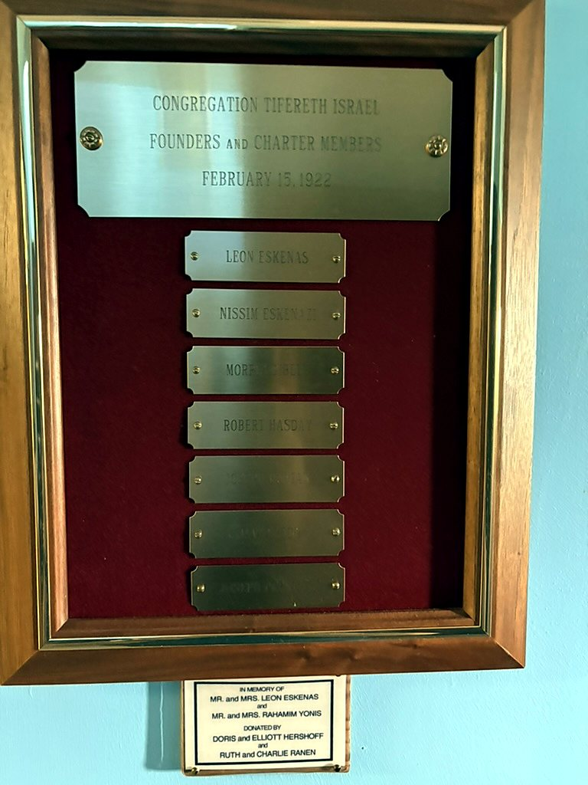
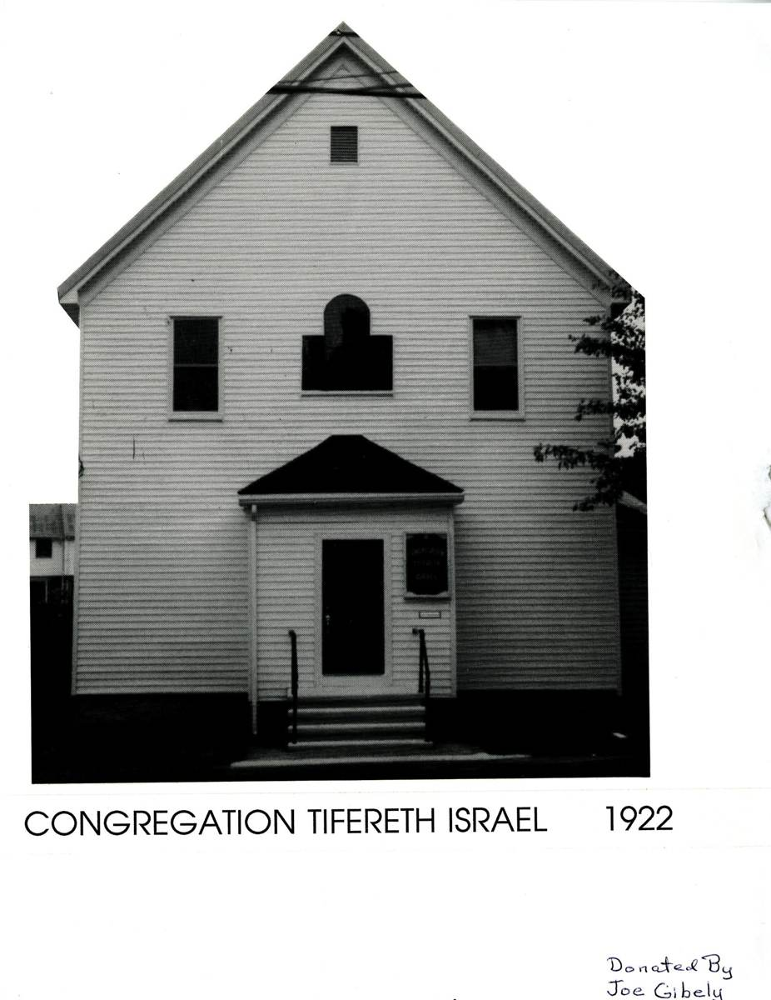
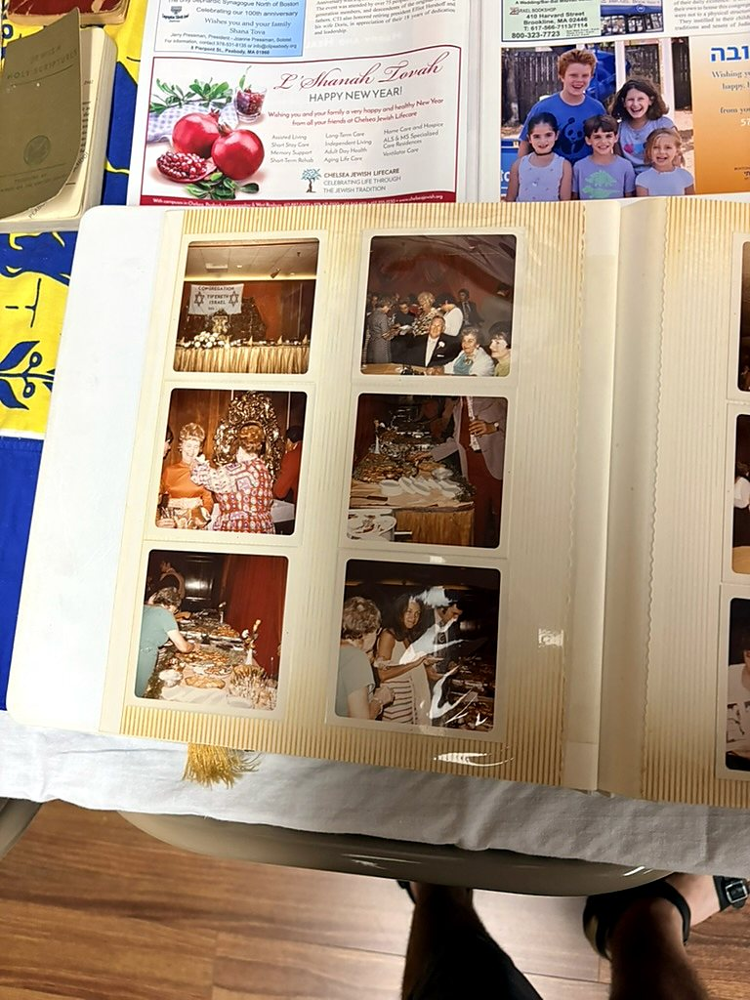
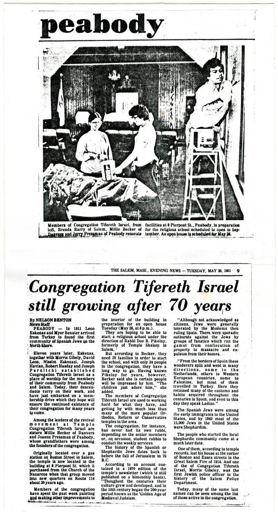
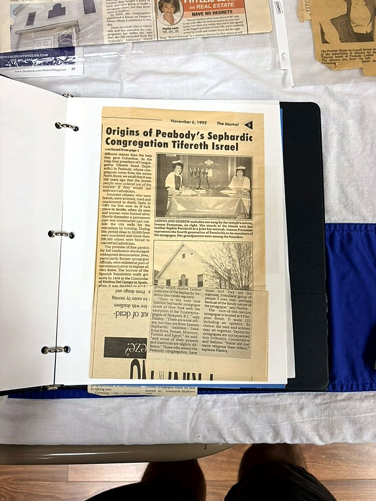
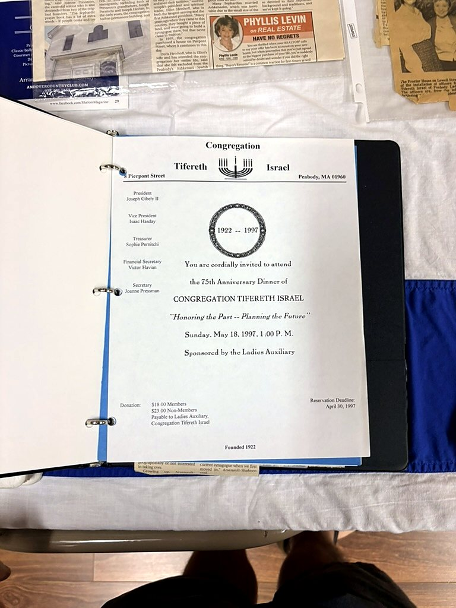
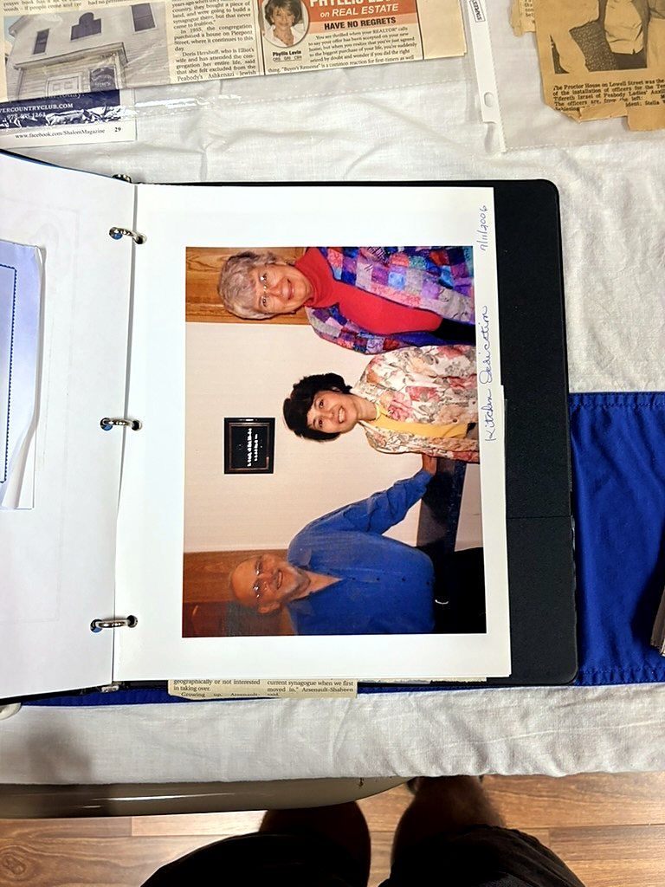
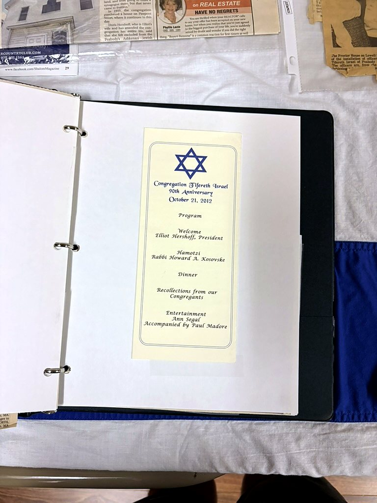
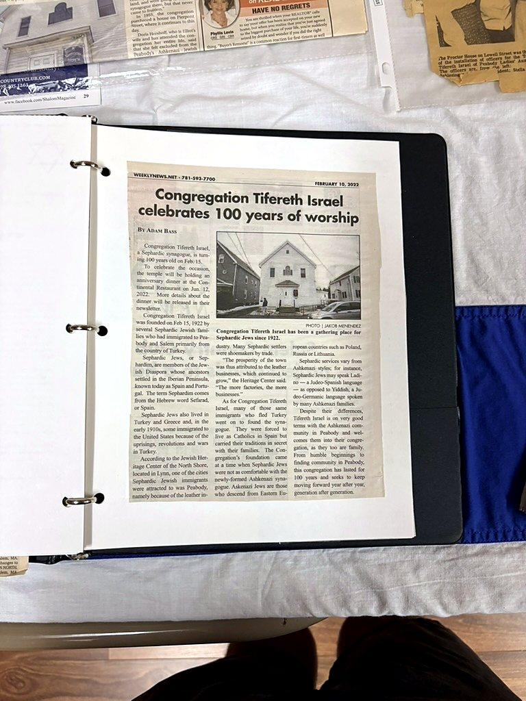

More than a century of Jewish life in Peabody
The story of Congregation Tifereth Israel begins with Sephardic families who created a Jewish home in Peabody and carried their traditions forward in a new country.
Roots in the Ottoman Jewish World
Congregation Tifereth Israel grew from a small Sephardic community that began taking root on the North Shore in the years before the First World War. Families from Ottoman Turkey, especially Constantinople, brought with them Ladino language, Sephardic prayer, and customs shaped by generations of Jewish life in the eastern Mediterranean. Their traditions traced back through Ottoman Sephardic communities to Jews expelled from Spain in 1492.
Some of the earliest families arrived in the Peabody and Salem area around 1911. The Balkan Wars, political instability, and compulsory military service helped push families to leave the Ottoman Empire, while Peabody's leather tanneries and other local industries offered work and the chance to build a new life.
Among the early pioneers remembered in the community are Don and Rebecca Eskenas and Meyer and Regina Bevotar. Their generation helped establish the foundation from which a distinct Sephardic congregation would grow.
February 15, 1922: A Congregation Is Founded
On February 15, 1922, seven Turkish Jewish immigrants formally chartered Congregation Tifereth Israel: Leon Eskenas, Nissim Eskenazi, Morris Gibely, Robert Hasday, Joseph Havian, David Leon, and Joseph Pernitchi.
The new congregation gave Peabody's Sephardic families a place to preserve a liturgy and communal culture that differed from the Yiddish-speaking Ashkenazi synagogues around them. Leon Eskenas served as president through the congregation's formative years, and Ralph Bencangey is remembered among its early spiritual leaders.
Historical record: view the founders and charter members plaque in Press & Archives →
From Living Rooms to Pierpont Street
For decades, Tifereth Israel worshiped without a permanent building of its own. Families prayed in private homes and rented rooms, and at times used space in other local synagogues, including Congregation Sons of Israel and Anshe Sfard. Services were also held for a time across the city line in Salem.
The congregation once purchased land with hopes of constructing a synagogue, but that plan did not come to fruition. In 1955, CTI instead acquired the former Church of the Nazarene at 8 Pierpont Street in Peabody. That modest building became the congregation's enduring home.
Photographic record: view the Pierpont Street photograph in the Gallery →
Preserving Ladino and Sephardic Traditions
For generations, members of CTI spoke Ladino, the Judeo-Spanish language of many Sephardic Jews from the former Ottoman Empire. The congregation preserved Sephardic melodies, prayer structures, and customs brought from Turkey even as its membership gradually became more diverse.
Among CTI's distinctive practices is the custom that blood relatives of a person called for an aliyah stand together in respect. The community also maintains a separate Sephardic section in a cemetery in Danvers, where older gravestones preserve traces of the community's language and heritage.
Rabbi Dov Pikelny helped anchor the congregation's religious life for nearly two decades beginning in the early 1980s, serving as a volunteer rabbi. Barbara Pikelny served as cantor during much of that period, while Joanne Pressman became an important keeper and transmitter of CTI's Sephardic musical and liturgical traditions.
A Community That Continued to Change
Over time, the boundaries between Sephardic and Ashkenazi Jewish life on the North Shore softened. Ashkenazi families joined CTI, intercultural marriages became part of the community's story, and the congregation evolved while continuing to protect the customs that made it distinctive.
A 2019 profile described CTI as a community of roughly 80 members, with Sephardic and Ashkenazi members present in roughly equal numbers. That figure is best understood as a snapshot of the congregation at that time rather than a current membership count.
Lay leaders have played an essential role in that continuity. Among those remembered for long service are Joseph Gibely II and Elliot Hershoff, who became the congregation's first Ashkenazi president. Joanne Pressman has also served as historian, cantorial soloist, and a bridge between generations; she is the granddaughter of two of CTI's original founders.
Historical record: view the presidents plaque in Press & Archives →
A Century — and the Next Chapter
Congregation Tifereth Israel marked its 90th anniversary in 2012 and celebrated its centennial in 2022. More than a century after seven immigrants formally created the congregation, CTI remains at 8 Pierpont Street — still shaped by the determination to carry Sephardic Jewish memory, music, and community forward.
The wider community
CTI grew as part of a broader Jewish community in Peabody. The 1958 Peabody Hebrew School photograph is preserved in the Gallery as regional context →
Historical Timeline
Small images point to the fuller photograph, album, article, or archival object without repeating it here.

Congregation Tifereth Israel Is Born
Seven Turkish Jewish immigrants formally chartered CTI on February 15, 1922. View the founders plaque and transcription →

The Early Congregation
An archival photograph preserves the congregation in its founding year. View the photograph in the Gallery →

Golden Anniversary
CTI marked fifty years of congregational life; photographs survive together in its anniversary album. Open the separated photo album →

Still Growing After 70 Years
A Salem Evening News profile documented CTI's history, membership drive and renewed religious life. Read the article transcription →

Origins of Peabody's Sephardic Congregation
A newspaper feature looked back at CTI's Sephardic roots and traditions. Read the archival article →


75th Anniversary
The Ladies Auxiliary sponsored CTI's 75th Anniversary Dinner on May 18, 1997. The invitation is preserved as anniversary ephemera.

Kitchen Dedication
A photograph and invitation preserve this congregational milestone. View the photograph →

Celebrating 90 Years
CTI marked nine decades of Jewish life in Peabody. View the anniversary coverage →

One Hundred Years
CTI celebrated its centennial and a century of continuity. View the centennial archive entry →